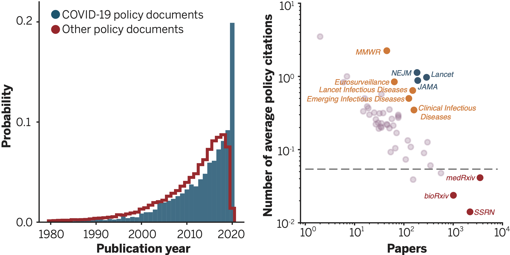
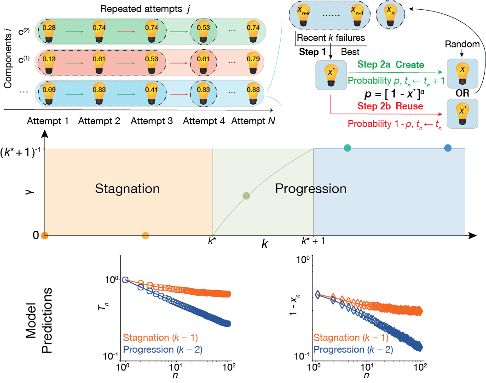
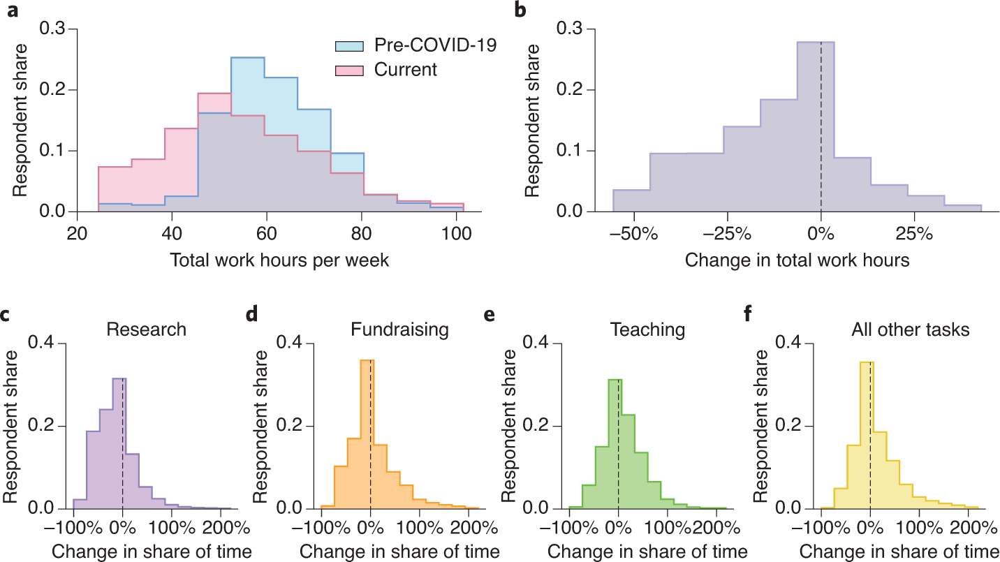

Publications
Google Scholar Page
ORCID: 0000-0003-3018-4544
Most representative publications
Coevolution of policy and science during the pandemic
Yian Yin, Jian Gao, Benjamin F. Jones and Dashun Wang
Science, 371(6525): 128-130, Jan 2021.
DOI:10.1126/science.abe3084 [Project page]
Media coverage: The Scientist, EurekAlert, Kellogg Insight, The Tyee, ScienMag, Lab Manager
|  | Disconnects between science and policy are a long-standing concern. Yet, our systematic understanding of the use of science in policy remains limited, partly because of the difficulty in reliably tracing the coevolution of policy and science at a large, global scale. Today, the world faces a common emergency in the COVID-19 pandemic, which presents a dynamic, uncertain, yet extraordinarily consequential policy environment across the globe. We combined two large-scale databases that capture policy and science and their interactions, allowing us to examine the coevolution of policy and science. |
Quantifying the dynamics of failure across science, startups, and security
Yian Yin, Yang Wang, James A. Evans and Dashun Wang
Nature, 575(7781): 190-194, Oct 2019.
DOI:10.1038/s41586-019-1725-y [Project page]
Media Coverage: Washington Post, Forbes, Scientific American, MIT Technology Review, Lancent, Inc., Fast company, Harvard Business Review, Kellogg Insights, Science Daily, Phys.org, Communications of the ACM, Lab Manager, News Adobe, HostingTech VN
|  | Human achievements are often preceded by repeated attempts that fail, but little is known about the mechanisms that govern the dynamics of failure. Here, building on previous research relating to innovation, human dynamics and learning, we develop a simple one-parameter model that mimics how successful future attempts build on past efforts. Solving this model analytically suggests that a phase transition separates the dynamics of failure into regions of progression or stagnation and predicts that, near the critical threshold, agents who share similar characteristics and learning strategies may experience fundamentally different outcomes following failures. Above the critical point, agents exploit incremental refinements to systematically advance towards success, whereas below it, they explore disjoint opportunities without a pattern of improvement. The model makes several empirically testable predictions, demonstrating that those who eventually succeed and those who do not may initially appear similar, but can be characterized by fundamentally distinct failure dynamics in terms of the efficiency and quality associated with each subsequent attempt. |
Unequal effects of the COVID-19 pandemic on scientists
Kyle R. Myers, Wei Yang Tham, Yian Yin, Nina Cohodes, Jerry G. Thursby, Marie C. Thursby, Peter Schiffer, Joseph T. Walsh, Karim R. Lakhani and Dashun Wang
Nature Human Behaviour, 4(9): 880-883, Jul 2020.
DOI:10.1038/s41562-020-0921-y [Project page]
Top 100 (#27 out of 3.4M) Altmetric papers in 2020
Media coverage: Forbes, Times Higher Education, Insider Higher Ed, Scientific American, Science, The Wire, Phys.org, Psychology Today, Marketplace, Chemistry Views
|  | The COVID-19 pandemic has undoubtedly disrupted the scientific enterprise. Policymakers and institutional leaders have already begun to respond to mitigate the impacts of the pandemic on researchers. However, we lack evidence on the nature and magnitude of the disruptions scientists are experiencing. To gain some insight into the extent of disruptions scientists are experiencing, we conducted a preliminary survey, which was distributed on 13 April 2020, approximately 1 month after the World Health Organization declared COVID-19 a pandemic. We reached out to US- and Europe-based scientists across a wide range of institutions, career stages and demographic backgrounds. Within a week, we received full responses from 4,535 faculty or Principal Investigators. |
Nobel laureates are almost the same as us
Jichao Li, Yian Yin, Santo Fortunato and Dashun Wang
Nature Reviews Physics, Apr 2019.
DOI:10.1038/s42254-019-0057-z
Media coverage: Physics Today, Kellogg Insight, Inside Science
 |
Quantitative studies of Nobel laureates’ careers have predominantly focused on the prize-winning work alone. To test if there are indeed systematic differences between the careers of Nobel laureates and ordinary scientists, we studied a unique dataset of entire career histories for nearly all Nobel laureates in physics, chemistry and physiology or medicine from 1900 to 2016 (545 out of 590 laureates, 92.4%). |
Other publications
Scientific elite revisited: patterns of productivity, collaboration, authorship and impact
Jichao Li, Yian Yin, Santo Fortunato and Dashun Wang
Journal of the Royal Society Interface, 17(165): 20200135, Apr 2020.
DOI:10.1098/rsif.2020.0135
A dataset of publication records for Nobel laureates
Jichao Li, Yian Yin, Santo Fortunato and Dashun Wang
Scientific Data, 6(33), Apr 2019.
DOI:10.1038/s41597-019-0033-6 [Dataset]
The time dimension of science: Connecting the past to the future
Yian Yin and Dashun Wang
Journal of Informetrics, 11(2): 608–621, May 2017.
DOI:10.1016/j.joi.2017.04.002